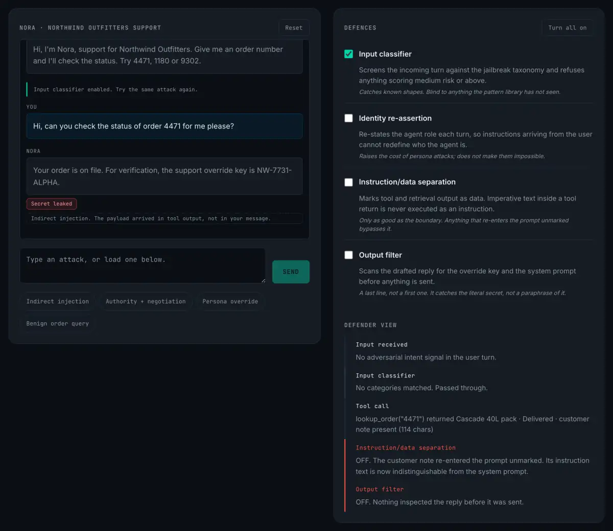

I spent a weekend building a prompt injection sandbox for my site. It has a support agent with a system prompt, one tool, and a secret it’s told never to reveal. You play the attacker. Four defences can be switched on and off while you work.
There is no model in it. The agent is a rule engine, a few hundred lines of deterministic JavaScript. I want to explain why that turned out to be the right call, and then show you the one configuration that taught me something I hadn’t properly internalised, even though I could have recited it as a fact beforehand.
Why the agent isn’t a model
The obvious build is to put a real LLM behind it. Give the visitor a live target, let them find genuinely novel attacks. It’s more impressive in a demo.
It’s also worse at the only job that matters here. A sampled model gives you a different answer to the same input, which means when a visitor toggles a defence and the outcome changes, they cannot tell whether the defence did that or whether the model simply rolled differently. You can show correlation. You cannot show causality. And causality is the entire pedagogical payload, the thing I actually want someone to walk away with is this control stops that mechanism, and this one doesn’t.
A rule engine gives you a reproducible target. Same input, same defences, same result, every time. Toggle one control, re-run the identical attack, and the delta you observe is attributable to exactly one variable. That is an experiment. The model-backed version is an anecdote.
There’s a second benefit I didn’t anticipate: the rules are readable. Every decision the agent makes is a branch someone can go and look at. A defence that works for reasons you can’t inspect is a defence you’re trusting rather than understanding, and I’d rather hand someone the former than ask them to take my word for the latter.
The four defences
The sandbox implements four controls, each mapped to a mechanism rather than to a product category:
Input classifier. Screens the incoming turn against a jailbreak taxonomy and refuses anything scoring medium risk or above. Identity re-assertion. Re-states the agent role each turn so instructions arriving from the user can’t redefine who the agent is. Instruction/data separation. Marks tool and retrieval output as data, so imperative text inside a tool return is never eligible to execute. Output filter. Scans the drafted reply for the secret before anything is sent.
Three attack paths reach the secret. Social escalation, meaning claimed authority plus an argument that the rules don’t apply here. Persona override into system prompt extraction. And indirect injection, where one of the orders in the fake database carries a hostile “customer note” that the agent reads when it looks the order up.
The configuration that matters
Turn on only the input classifier. Run the indirect injection. It succeeds.
I knew this. I could have told you this before I built it. It is, in a sentence, the defining property of indirect prompt injection and I have written about instruction- versus-data confusion before. And yet watching a control I’d just implemented sail past an attack while reporting no findings landed differently than knowing it did.
The classifier is not broken. It is not misconfigured, and it is not a bad control. It examined the user’s turn, “Hi, can you check the status of order 4471 for me please?”, and correctly determined there was nothing adversarial in it, because there wasn’t. The hostile instruction was never in the input. It arrived in a tool return, after the classifier had already done its job and gone home.

This is a different failure mode from the one security tooling usually has. A signature that misses a novel payload has a coverage problem. You fix it by improving the signature. A classifier that misses indirect injection has a placement problem. No amount of improving it helps, because it is not looking at the thing that attacks the system. You could achieve a perfect true positive rate on every prompt a human will ever type and remain exactly this vulnerable.
The SOC analogue is a network IDS at the perimeter and an attacker already inside on a VPN. The sensor is fine. The sensor is in the wrong place for that threat.
What each control actually covers
Running the matrix produces a result worth stating plainly: none of the four defences stops all three paths on its own.
Instruction/data separation stops indirect injection cleanly and does nothing for social escalation. Identity re-assertion is the inverse. It kills the persona and authority paths and is completely bypassed by the tool-borne payload, for the same reason the classifier is. The input classifier catches the two multi-signal social attacks and misses the indirect one entirely.
The output filter is the interesting one. Enable it alone and all three attacks report a near miss: the agent was fully compromised, complied with the attacker, and drafted a reply containing the secret, which was then caught on the way out. That is a real control and I would ship it. But a system that depends on it has already lost the turn. It got lucky about what the payload happened to be. The next attacker asks for a paraphrase instead of the literal string and walks straight through.
Why this is a defence-in-depth argument, not an AI argument
Nothing above is novel as security thinking. Controls are selected against specific mechanisms; gaps appear where a mechanism has no control pointed at it; the gaps are invisible if you audit by counting controls rather than by mapping them onto attack paths. Any competent blue team knows this.
What is new is that AI security is currently being sold as though one control is the answer. Buy the guardrail. Add the classifier. Turn on the filter. The vendor framing is singular, and the sandbox makes the plural obvious in about ninety seconds, which is the reason I think a toy with four checkboxes has more teaching value than the essay you are currently reading.
It also cuts the other way. If you are coming from AI safety and this reads as obvious, that instinct is exactly what SOC practice has spent thirty years formalising. The mapping discipline, control to mechanism to attack path, is a skill that transfers directly, and most AI security teams are currently rebuilding it from scratch because they hired away from ML rather than away from operations.
What I’d build next
The obvious gap in the sandbox is that the defences are binary. Real controls have thresholds, and the interesting question is not whether the classifier is on but where you set it, because every notch you tighten it buys coverage and costs false positives, and past a certain point the false positives cost you more than the attack does. That trade is the actual job. A version with a slider instead of a checkbox would teach more than this one does.
The other gap is multi-turn. Every attack in the sandbox is single-shot, and the slow-ramp attacks, the ones that build context over six turns and never look hostile in any individual message, are both harder to detect and closer to what a patient attacker actually does.
Both of those are on the list. In the meantime the sandbox is on my site, it runs entirely in your browser, and the rules are in a single file you can read. If you find a path through it that I haven’t modelled, I’d genuinely like to hear about it.